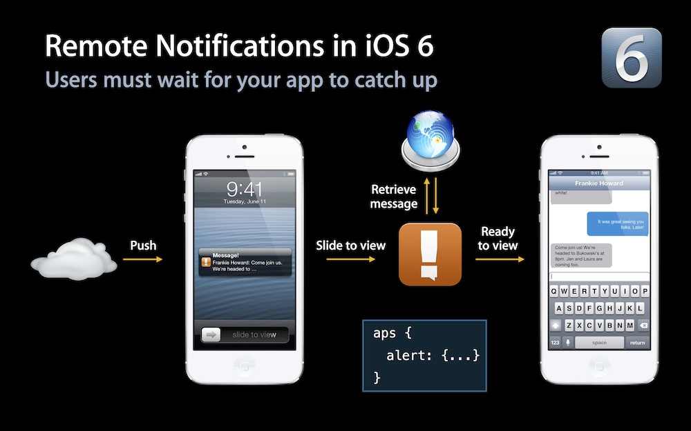
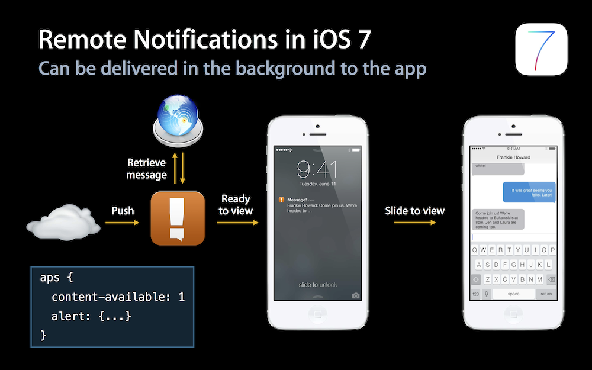
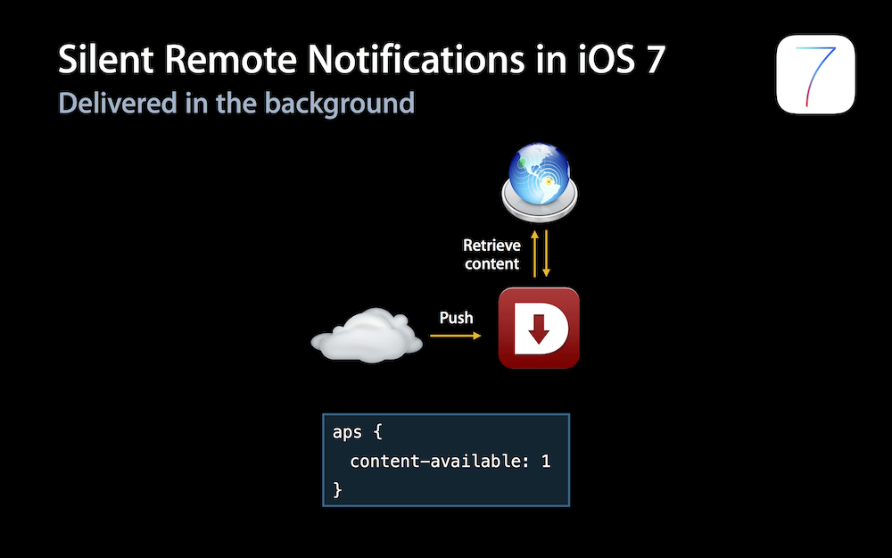
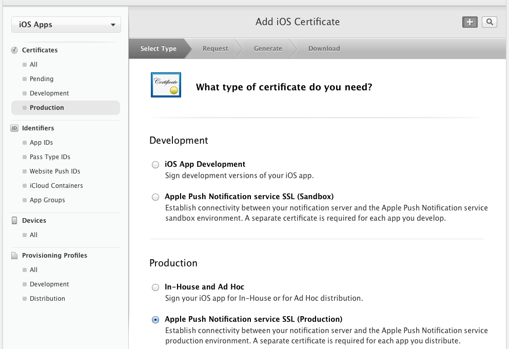
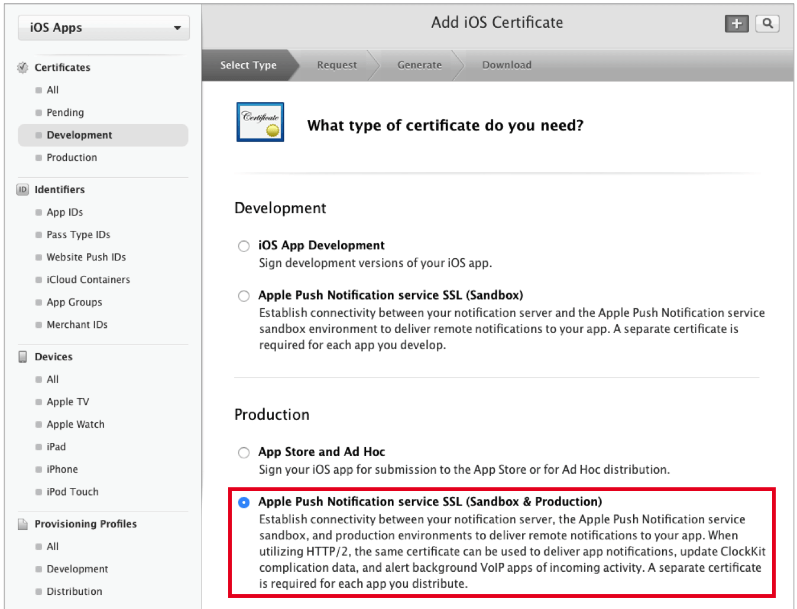
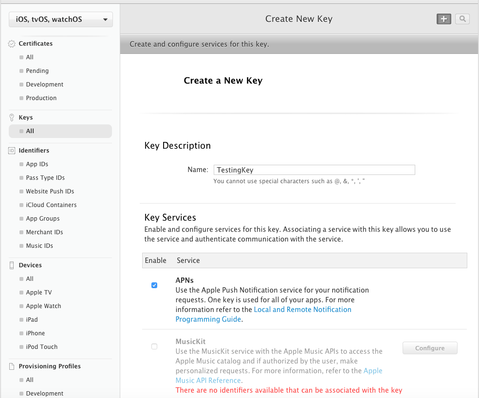

一、iOS 7之前特性
1、本地推送
不需要注册通知类型（授权），直接可以收到Push；
发送Push
UILocalNotification *notification = [[UILocalNotification alloc] init]; [[UIApplication sharedApplication] scheduleLocalNotification:notification];处理Push
// a. 完全退出：有横幅等提示；只有点击横幅启动，才能从launchOptions中获取到push内容，否则无法获取 - (BOOL)application:(UIApplication *)application didFinishLaunchingWithOptions:(NSDictionary *)launchOptions // a. 前台：无横幅等提示；自动回调下面的方法，立即获取到push内容 // b. 后台：有横幅等提示；只有点击横幅，才会回调下面的方法，获取到push内容 - (void)application:(UIApplication *)application didReceiveLocalNotification:(UILocalNotification *)notification
2、远程推送
需要注册推送提醒类型（授权），才可以收到Push；
UIRemoteNotificationType type = UIRemoteNotificationTypeAlert | UIRemoteNotificationTypeBadge | UIRemoteNotificationTypeSound; [application registerForRemoteNotificationTypes:type];获取DeviceToken（以供后台发送Push；会自动获取，实现代理方法即可）
- (void)application:(UIApplication *)application didRegisterForRemoteNotificationsWithDeviceToken:(NSData *)deviceToken - (void)application:(UIApplication *)application didFailToRegisterForRemoteNotificationsWithError:(NSError *)error // 获取deviceTokenStr NSString *deviceTokenStr = [deviceToken description]; deviceTokenStr = [deviceTokenStr stringByReplacingOccurrencesOfString:@"<" withString:@""]; deviceTokenStr = [deviceTokenStr stringByReplacingOccurrencesOfString:@">" withString:@""]; deviceTokenStr = [deviceTokenStr stringByReplacingOccurrencesOfString:@" " withString:@""];- 注意：不进行
注册推送提醒类型（授权），也可以进行获取DeviceToken；之后iOS 7新增的静默推送，即不需要进行注册推送提醒类型（授权）也可以使用的；
- 注意：不进行
Push消息格式
{ "aps" : { "alert" : { "title" : "Title", "body" : "Your message here." }, "sound" : "default", "badge" : 9 } }处理Push
// a. 完全退出：有横幅等提示；只有点击横幅启动，才能从launchOptions中获取到push内容，否则无法获取 - (BOOL)application:(UIApplication *)application didFinishLaunchingWithOptions:(NSDictionary *)launchOptions // a. 前台：无横幅等提示；自动回调下面的方法，立即获取到push内容 // b. 后台：有横幅等提示；只有点击横幅，才会回调下面的方法，之后获取到push内容 - (void)application:(UIApplication *)application didReceiveRemoteNotification:(NSDictionary *)userInfo
二、iOS 7新增特性
1、后台推送、静默推送、普通推送之间的区别：
a. 后台推送
- 消息携带content-available，并且还必须需要携带badge、sound、body等中的某些参数；
- 需要
注册推送提醒类型（授权）； - 消息到来时，用户有感知
- 和普通推送的区别：是否可以后台执行代码；
b. 静默推送
- 消息只携带content-available，不携带badge、sound、body等参数，可以自定义参数；
- 不需要
注册推送提醒类型（授权）； - 消息到来时，用户无感知；
和后台推送的区别：消息是否携带badge、sound、body等中的某些参数，其他没有区别；也可以后台执行代码；



2、新增
- (void)application:(UIApplication *)application didReceiveRemoteNotification:(NSDictionary *)userInfo fetchCompletionHandler:(void (^)(UIBackgroundFetchResult))completionHandler方法，该方法有以下两个作用：1）不启用“后台模式（推送）”情况下，用于替换之前的处理push的方法（
didFinishLaunchingWithOptions和didReceiveRemoteNotification）；需要注意避免重复处理推送消息现象；- a. 若同时存在didReceiveRemoteNotification和fetchCompletionHandler，则fetchCompletionHandler被调用（场景处理方式和didReceiveRemoteNotification一样），didReceiveRemoteNotification方法被忽略；
- b. 若同时存在didFinishLaunchingWithOptions和fetchCompletionHandler，完全退出时点击横幅启动，则两个方法都会被调用；
- c. 若在fetchCompletionHandler中处理推送消息，则
不需要再在didFinishLaunchingWithOptions中处理推送消息，否则fetchCompletionHandler就重复处理推送消息了；
2）启用“后台模式（推送）”情况下，可以用于进行“后台推送（Background Remote Notification， 推送唤醒）”和“静默推送（Silent Remote Notification）”；注意：也需要避免重复处理推送消息现象；
a. “后台推送”生效的四大条件（必须同时满足，否则不被启用）：
- a) App处于后台；
- b) 服务器推送push内容包含
"content-available": 1参数信息； - c) Xcode打开
Background Modes:Remote notifications选项； - d) 实现fetchCompletionHandler方法；
b. “后台推送”生效后：
- 收到推送消息时，系统会立即主动调用fetchCompletionHandler（此时状态为
UIApplicationStateBackground），不需要点击横幅，就可以在该方法中执行一些后台代码（30s）； - 若之后还点击横幅，fetchCompletionHandler会被再次调用（此时状态为
UIApplicationStateInactive）； - 为了避免重复执行代码，需要在该方法中根据[UIApplication sharedApplication].applicationState进行判断处理；
- 收到推送消息时，系统会立即主动调用fetchCompletionHandler（此时状态为
c. App处于“前台”、“完全退出”，是不会触发“后台推送”（即收到通知后，不会自动回调fetchCompletionHandler），该场景下的处理方式和上面的不启用“后台模式（推送）”的一样；
d. 注意在“完全退出”场景下，不论是否启用“后台模式（推送）”，为避免didFinishLaunchingWithOptions、fetchCompletionHandler重复处理推送消息，即实现了fetchCompletionHandler后，就不要在didFinishLaunchingWithOptions中再处理推送消息了；
e. 若满足“后台模式（推送）”的四大条件的前三个条件，使用didReceiveRemoteNotification代替fetchCompletionHandler方法，也是可以执行后台任务的，只是执行时长没有fetchCompletionHandler长（通过观察打印日志可以看到）；
f. 测试后台推送，需要手机打开“后台应用刷新”，否则回调方法不会自动运行；若使用Xcode安装运行应用进行测试，却可以自动运行；
三、iOS 8新增特性
1、新增注册推送提醒类型（授权）[application registerUserNotificationSettings:setting]方法，废弃之前的[application registerForRemoteNotificationTypes:type]方法；该方法给用户提供了与Push“快速回复”的交互功能；
UIUserNotificationType type = UIUserNotificationTypeAlert | UIUserNotificationTypeBadge | UIUserNotificationTypeSound; UIUserNotificationSettings *setting = [UIUserNotificationSettings settingsForTypes:type categories:nil]; [application registerUserNotificationSettings:setting];categories参数设置：
// Call category UIMutableUserNotificationAction *acceptAct = [[UIMutableUserNotificationAction alloc] init]; acceptAct.identifier = @"acceptAct"; // 行为标识符（用于在代理方法中区分哪种action） acceptAct.title = @"Accept"; // 按钮显示名称 acceptAct.activationMode = UIUserNotificationActivationModeForeground; // 是否打开App（UIUserNotificationActivationModeForeground会打开App） acceptAct.destructive = YES; // 按钮显示颜色，YES为红色 UIMutableUserNotificationAction *rejectAct = [[UIMutableUserNotificationAction alloc] init]; rejectAct.identifier = @"rejectAct"; rejectAct.title = @"Reject"; rejectAct.activationMode = UIUserNotificationActivationModeBackground; rejectAct.authenticationRequired = NO; // 是否需要解锁（在UIUserNotificationActivationModeBackground模式下有效） UIMutableUserNotificationCategory *callCate = [[UIMutableUserNotificationCategory alloc] init]; callCate.identifier = @"callCate"; [callCate setActions:@[ acceptAct, rejectAct ] forContext:UIUserNotificationActionContextDefault]; // Message category UIMutableUserNotificationAction *readAct = [[UIMutableUserNotificationAction alloc] init]; readAct.identifier = @"readAct"; readAct.title = @"Read"; readAct.activationMode = UIUserNotificationActivationModeForeground; readAct.destructive = YES; UIMutableUserNotificationAction *ignoreAct = [[UIMutableUserNotificationAction alloc] init]; ignoreAct.identifier = @"ignoreAct"; ignoreAct.title = @"Ignore"; ignoreAct.activationMode = UIUserNotificationActivationModeBackground; ignoreAct.authenticationRequired = NO; UIMutableUserNotificationCategory *messageCate = [[UIMutableUserNotificationCategory alloc] init]; messageCate.identifier = @"messageCate"; [messageCate setActions:@[ readAct, ignoreAct ] forContext:UIUserNotificationActionContextDefault]; // set type、categorey UIUserNotificationType type = UIUserNotificationTypeAlert | UIUserNotificationTypeBadge | UIUserNotificationTypeSound; NSSet *categories = [NSSet setWithObjects: callCate, messageCate, nil]; UIUserNotificationSettings *setting = [UIUserNotificationSettings settingsForTypes:type categories:categories]; [application registerUserNotificationSettings:setting]; ```
在Push的内容中加上
"category": "callCate"参数信息，即可以显示不同category下的action按钮；若没有发送的Push的category与注册的匹配不上，则无action按钮；点击不同的Action，会执行本地、远程Push的Action按钮的处理代理方法，之前的Push处理方法不会被再调用；
// local - (void)application:(UIApplication *)application handleActionWithIdentifier:(NSString *)identifier forLocalNotification:(UILocalNotification *)notification completionHandler:(void(^)())completionHandler // remote - (void)application:(UIApplication *)application handleActionWithIdentifier:(NSString *)identifier forRemoteNotification:(NSDictionary *)userInfo completionHandler:(void(^)())completionHandlerUIUserNotificationActionContext：有UIUserNotificationActionContextDefault、UIUserNotificationActionContextMinimal两种类型，一般使用Default；
2、新增注册推送提醒类型（授权）状态回调方法：
- (void)application:(UIApplication *)application didRegisterUserNotificationSettings:(UIUserNotificationSettings *)notificationSettings3、本地Push也需要进行
注册推送提醒类型（授权）；4、远程Push必须手动调用“注册远程推送方法”
[application registerForRemoteNotifications]（iOS 8新增的方法），否则无法获取deviceToken；- 注意：不进行
注册推送提醒类型（授权），也可以进行获取DeviceToken；之后iOS 7新增的静默推送，即不需要进行注册推送提醒类型（授权）也可以使用的；
- 注意：不进行
5、可以使用本地字符串strings中自定义键值参数动态配置Push内容，以用于推送内容国际化，并且还优化流量：
a. 在Localizable.strings中添加国际化字符串，比如：
"push_con" = "iOS%@ 开发指南（第%@版）";b. 配置推送内容，比如：
{ "aps" : { "alert" : { "local-key" : "push_con", "local-args" ["10", "二"] }, "sound" : "default", "badge" : 9 } }
6、UILocalNotification新增CLRegion类型的region属性，可以用于基于地理位置进行本地Push；
四、iOS 9新增特性
1、新增UIUserNotificationActionBehaviorTextInput文字输入类型的UIMutableUserNotificationAction，用于快速回复文字；通过设置action的behavior属性（iOS 9新增）设置该值，默认值为UIUserNotificationActionBehaviorDefault；
// for iOS 9 Reply Text UIMutableUserNotificationAction *replyAct = [[UIMutableUserNotificationAction alloc] init]; replyAct.identifier = @"replyAct"; replyAct.title = @"Reply"; replyAct.activationMode = UIUserNotificationActivationModeBackground; replyAct.behavior = UIUserNotificationActionBehaviorTextInput; // 回复文字2、新增新的处理点击Push的Action按钮的处理方法；
// local - (void)application:(UIApplication *)application handleActionWithIdentifier:(NSString *)identifier forLocalNotification:(UILocalNotification *)notification withResponseInfo:(NSDictionary *)responseInfo completionHandler:(void (^)())completionHandler // remote - (void)application:(UIApplication *)application handleActionWithIdentifier:(NSString *)identifier forRemoteNotification:(NSDictionary *)userInfo withResponseInfo:(NSDictionary *)responseInfo completionHandler:(void (^)())completionHandleriOS9新增的代理方法与iOS8的代理方法，主要加了一个类型为Dict的responseInfo参数；该参数用了获取（通过UIUserNotificationActionResponseTypedTextKey键）快速回复文字时，回复的文字；
若同时实现了iOS8和iOS9的新增代理方法，则只有iOS9的代理方法有效；
五、iOS 10新增特性
iOS 10废弃了之前在UIKit框架中的UILocalNotification、UIUserNotificationType、UIMutableUserNotificationAction等一系列的Push类型，单独使用一个框架（UserNotifications）来实现Push；
1) 使用UNUserNotificationCenter去请求授权，option（type）和category分别设置；
2) 请求注册获取token的请求方法和获取代理方法都没有变化；
3) 处理Push的代理方法不是APPDelete的代理方法了，而是UNUserNotificationCenter代理方法，必须设置UNUserNotificationCenter对象的delete，否则无法处理Push；
4) 处理本地Push、远程Push、本地Push的Action、远程Push的Action的代理方法合并成一个方法，使用UNNotification.request.trigger的类型区分是本地的还是远程的；
5) 新增一个单独方法处理在前台接收到的Push，在前台接收到Push也可以显示横幅、提示音、角标；
// for romote Push；请求注册获取token（请求方法和获取代理方法都没有变化） [[UIApplication sharedApplication] registerForRemoteNotifications]; // 注册推送提醒类型（授权） UNUserNotificationCenter *center = [UNUserNotificationCenter currentNotificationCenter]; UNAuthorizationOptions options = UNAuthorizationOptionBadge | UNAuthorizationOptionSound | UNAuthorizationOptionAlert; [center requestAuthorizationWithOptions:options completionHandler:^(BOOL granted, NSError * _Nullable error) { if (granted) { NSLog(@"requestAuthorization, granted..."); } else { NSLog(@"requestAuthorization, no granted..."); } // 获取用户的授权信息 [center getNotificationSettingsWithCompletionHandler:^(UNNotificationSettings * _Nonnull settings) { NSLog(@"settings: %@", settings); }]; }]; // 必须设置代理，否则无法回调Push处理代理方法 center.delegate = self;// 2. 获取DeviceToken - (void)application:(UIApplication *)application didRegisterForRemoteNotificationsWithDeviceToken:(NSData *)deviceToken { NSString *deviceTokenStr = [[[[deviceToken description] stringByReplacingOccurrencesOfString:@"<" withString:@""] stringByReplacingOccurrencesOfString:@">" withString:@""] stringByReplacingOccurrencesOfString:@" " withString:@""]; NSLog(@"%s, %@", __func__, deviceTokenStr); } - (void)application:(UIApplication *)application didFailToRegisterForRemoteNotificationsWithError:(NSError *)error { NSLog(@"%s, %@", __func__, error); }// 3. 处理Push #pragma mark - UNUserNotificationCenterDelegate // 在前台收到Push，自动回调 - (void)userNotificationCenter:(UNUserNotificationCenter *)center willPresentNotification:(UNNotification *)notification withCompletionHandler:(void (^)(UNNotificationPresentationOptions))completionHandler { NSLog(@"%s, %@", __func__, notification); [self handleNtf:notification]; // 配置在前台情况下，有哪些提示信息（前台情况下，iOS10之前不会出现横幅） completionHandler(UNNotificationPresentationOptionBadge | UNNotificationPresentationOptionAlert); } // 后台、退出：点击横幅（或Action）时回调 - (void)userNotificationCenter:(UNUserNotificationCenter *)center didReceiveNotificationResponse:(UNNotificationResponse *)response withCompletionHandler:(void (^)(void))completionHandler { NSLog(@"%s, %@", __func__, response); UNNotification *notification = response.notification; [self handleNtf:notification]; completionHandler(); } - (void)handleNtf:(UNNotification *)notification { UNNotificationRequest *ntfRequest = notification.request; // Push的请求 UNNotificationTrigger *ntfTrigger = ntfRequest.trigger; // Push的请求 类型（用于区分本地、远程Push） UNNotificationContent *ntfContent = ntfRequest.content; // Push的请求 内容 // Push内容的具体数据 NSNumber *badge = ntfContent.badge; UNNotificationSound *sound = ntfContent.sound; NSString *title = ntfContent.title; NSString *subTitle = ntfContent.subtitle; NSString *body = ntfContent.body; if ([ntfTrigger isKindOfClass:[UNPushNotificationTrigger class]]) { NSLog(@"%s, remote push....", __func__); } else { NSLog(@"%s, local push....", __func__); } }iOS 10中，Apple将本地Push和远程Push合二为一，使用UNNotificationTrigger类来区分，所有的Push类型都是该类型的子类；
- UNPushNotificationTrigger：远程Push；
- UNTimeIntervalNotificationTrigger：本地Push，可以设置timeInterval、repeats；
- UNCalendarNotificationTrigger：本地Push，可以设置dateComponents；
- UNLocationNotificationTrigger：本地Push，基于地理位置；
// 发送本地Push // 1). 创建trigger UNTimeIntervalNotificationTrigger *trigger = [UNTimeIntervalNotificationTrigger triggerWithTimeInterval:0.5 repeats:NO]; // 2). 创建Push的内容 UNMutableNotificationContent *mNtfContent = [[UNMutableNotificationContent alloc] init]; mNtfContent.title = @"提醒"; mNtfContent.subtitle = @"提醒~~~"; mNtfContent.body = @"This is a message!!!"; mNtfContent.sound = [UNNotificationSound defaultSound]; mNtfContent.userInfo = @{ @"a": @"123" }; // 3). 创建Push请求 NSString *identifier = @"com.meme.push.local.ios10"; // Push标识 UNNotificationRequest *ntfRequest = [UNNotificationRequest requestWithIdentifier:identifier content:mNtfContent trigger:trigger]; // 4). 将Push添加到Push管理中心（UNUserNotificationCenter） UNUserNotificationCenter *center = [UNUserNotificationCenter currentNotificationCenter]; [center addNotificationRequest:ntfRequest withCompletionHandler:^(NSError * _Nullable error) { NSLog(@"completionHandler, %@", error); }];iOS 10也提供了对Push进行删除、修改、查询的便捷的方法（UNUserNotificationCenter的），本地Push、远程Push都可以的，远程的需要push的内容中加
apps-collapse-id字段作为唯一标识；- 之前只能对本地Push做删除，且没有直接方法，必须先给特定Push的userInfo中设置一个标记，然后遍历所有的Push，找到匹配的Push才能进行删除；
- 现在可以通过Push的identifier直接进行删除；
- 相同标识的Push会更新之前的Push；
// 获取、删除未送达的 - (void)getPendingNotificationRequestsWithCompletionHandler:(void(^)(NSArray<UNNotificationRequest *> *requests))completionHandler; - (void)removePendingNotificationRequestsWithIdentifiers:(NSArray<NSString *> *)identifiers; - (void)removeAllPendingNotificationRequests; // 获取、删除已送达的 - (void)getDeliveredNotificationsWithCompletionHandler:(void(^)(NSArray<UNNotification *> *notifications))completionHandler; - (void)removeDeliveredNotificationsWithIdentifiers:(NSArray<NSString *> *)identifiers; - (void)removeAllDeliveredNotifications;iOS 7增加的后台推送处理方法
- (void)application:(UIApplication *)application didReceiveRemoteNotification:(NSDictionary *)userInfo fetchCompletionHandler:(void (^)(UIBackgroundFetchResult))completionHandler，在iOS 10中依然有效，而且需要必须满足“四个条件”；- a. 非后台模式：
- 同时实现withCompletionHandler和fetchCompletionHandler方法，则点击横幅时只回调withCompletionHandler；
- 未实现withCompletionHandler，则回调fetchCompletionHandler；
- b. 后台模式：
- 收到通知，首先自动回调fetchCompletionHandler；
- 之后若同时实现withCompletionHandler和fetchCompletionHandler方法，则点击横幅时只回调withCompletionHandler；
- 未实现withCompletionHandler，则回调fetchCompletionHandler；
- a. 非后台模式：
使用Xcode 8（iOS 10 SDK）编译远程推送相关代码，必须要打开Capabilities中的Push Notification，生成entitlements文件，否则获取的DeviceToken是无效的，服务端无法向该设备推送消息；Xcode 7无此问题；
使用Xcode 8（iOS 10）编译远程推送相关代码，最好也打开
Background Modes:Remote notifications选项，否则Xcode报警告log；（只要推送消息不包含"content-available"=1字段，就不是后台推送了）；Xcode 7无此问题；
六、iOS 13新增特性
使用Xcode 11（iOS 13 SDK）编译的程序，无法使用之前的方式获取DeviceToken了（即使允许到iOS 13之前的系统上，也无法获取）；
a. 之前的方式
// 获取deviceTokenStr NSString *deviceTokenStr = [deviceToken description]; deviceTokenStr = [deviceTokenStr stringByReplacingOccurrencesOfString:@"<" withString:@""]; deviceTokenStr = [deviceTokenStr stringByReplacingOccurrencesOfString:@">" withString:@""]; deviceTokenStr = [deviceTokenStr stringByReplacingOccurrencesOfString:@" " withString:@""];b. 现在的方式
// 获取deviceTokenStr NSMutableString *deviceTokenStr = [NSMutableString string]; const char *bytes = deviceToken.bytes; for (int i=0; i < deviceToken.length; i++) { [deviceTokenString appendFormat:@"%02x", bytes[i]&0x000000FF]; }// 获取deviceTokenStr var deviceTokenStr = String() let bytes = [UInt8](deviceToken) for byte in bytes { deviceTokenStr += String(format:"%02x", byte&0x000000FF) }
七、推送证书的生成方式
1、之前的生成方式

Apple Push Notification service SSL (Sandbox)：用于开发环境（Sandbox）；Apple Push Notification service SSL (Production)：用于生产环境（Production）；
2、变更为
Universal推送证书- 2015年12月17日起，Apple发布“基于HTTP/2协议的全新APNs协议”，并推出
Universal Push Notification Client SSL推送证书，简称Universal推送证书； Apple Push Notification service SSL (Sandbox & Production)这种方式创建的推送证书就是“Universal推送证书”；
Apple Push Notification service SSL (Sandbox)：用于开发环境（Sandbox）；Apple Push Notification service SSL (Sandbox & Production)：可同时用于开发环境（Sandbox）、生产环境（Production），二合一；
- 2015年12月17日起，Apple发布“基于HTTP/2协议的全新APNs协议”，并推出
3、Token Authentication
同一个账户下所有App，无论是开发环境还是生成环境，都使用同一个Key，发送APNs、VoIP消息，并且Key没有过期时间，不用想证书那样每年都重新生成一次；
